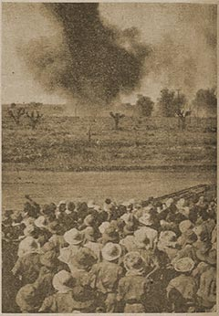

|
j
a v a s c r i p t |
March 12, 1944

The thousands witnessing
yesterday's spectacle Tribune: "4,000 Foe Troops Perish in Fierce Counter-Offensive.... 381 planes and 12 motor torpedo boats smashed since January in areas of Cape Gumbi and Madang, New Guinea." It's the Japanese way of offsetting bad news: "A strong enemy group landed in Los Negros Island" — in the Admiralty Group on February 29; where "severe fighting continues." Commentator: "Serious Anti-Axis Setbacks Characterize War at Turning Point." Nettuno in Italy, Arakan in Burma, the air battle over Germany, and the bombing of London were all defeats for the Allies; and now they are facing a "Bougainville Showdown." Medina of E. Santamaria & Co. is the only Bataan man I know who has seen Dawn of Freedom. He could only stomach half of it. Americans machine gunning Filipinos to keep them out of air raid shelters is "stupid," he said. The only guy he got sore at was a Filipino First Sergeant. After hiking from 0400 to 1500 to deliver a message to the rear, the First Sergeant told him hike back immediately. Only Medina hadn't had a bite to eat since the previous day. "An American would have seen to it that I had something to eat first." Sending a letter and P100 to Joe tomorrow. It's writ and sealed. Maurice ditto a couple of days ago. That special papaya tree that he and I planted in August bore fruit today — a little wet but intact. We'll plant an even better one soon, we hope, for Auld Lang Syne. |
|
|
|
|